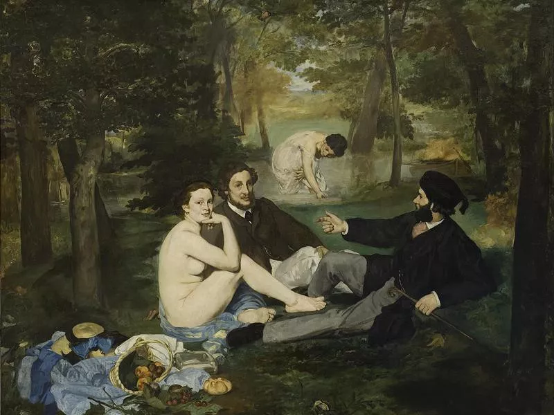
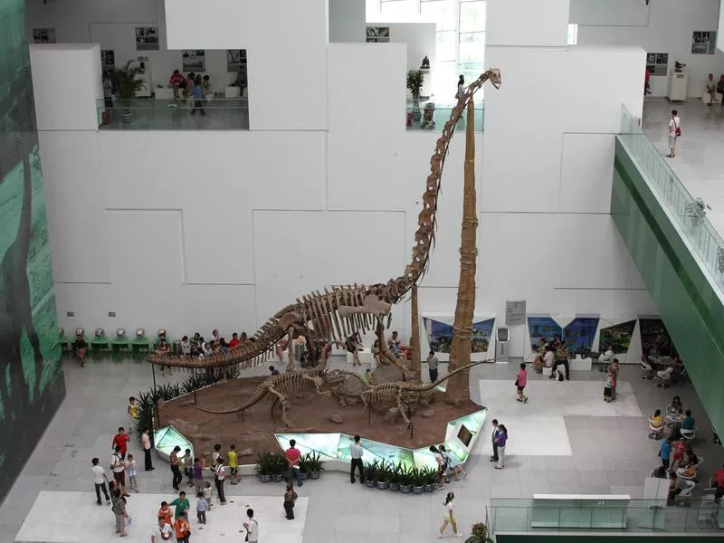

Piece: "Le déjeuner sur l'herbe" by Edouard Manet
Location: Paris, France
Number of annual visitors: 3.65 million
This painting was extremely controversial when it was first exhibited in 1963 because of its depiction of a nude woman and a bathing woman casually interacting with fully clothed men. It was also considered an insult to art because Manet departed from the realist and stylized version that had been the norm since the Renaissance. The piece is one of the first — if not the first — example of post-modern art.
June 1, 2023Piece: The Jadeite Cabbage

Location: Taipei, Taiwan
Number of annual visitors: 3.83 million
Must-See at National Palace Museum in Taipei, Taiwan. With works that encompass 8,000 years of history, the National Palace Museum in Taipei is one of Asia's greatest cultural treasures. There are more than 700,000 pieces displayed, mostly concentrating on Chinese imperial art. This odd sculpture, which some believe represents female virtue, is a crowd favorite. It is carved in the form of a cabbage with insects hiding within its leaves.
June 1, 2023Comments
Piece: Dinosaur fossils
Location: Beijing, China
Number of annual visitors: 3.89 million
China Science and Technology Museum
You can see the remains of a Chinese Dilophosaurus positioned to attack a Lufengosaurus huenei. Some dinosaur bones are also set up to be touched by the public — a rare experience you won't find in many other museums!
June 1, 2023
Comments